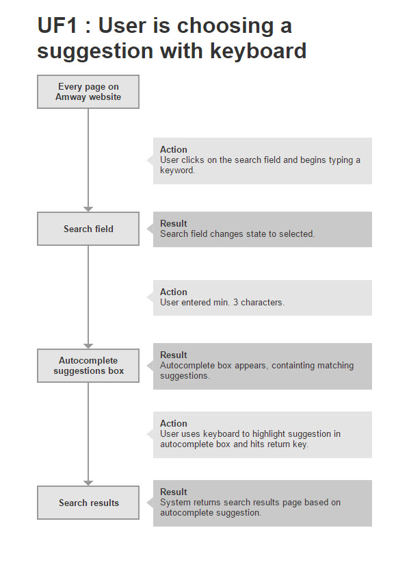
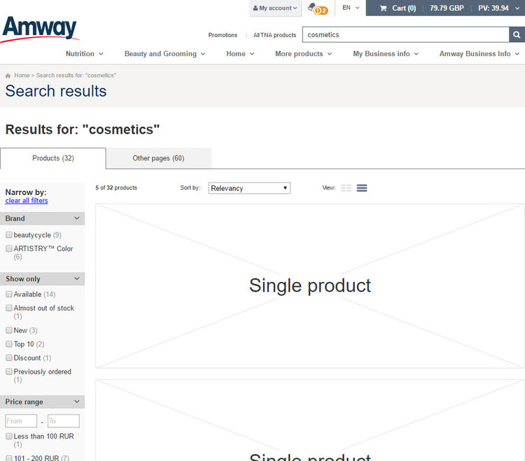

Amway is an American company that uses a multi-level marketing business model to sell a variety of products, primarily in the health, beauty, and home care markets.
The Search feature in any e-commerce is a valuable tool for Customers to find their products. Since Amway's business model revolves around Business Owners having personal connection with their customers, the search feature on Amway website was treated with a bit of neglect.
Previously implemented Search feature was left alone without any improvements for many years. It was full of bugs and it more often returned errors or zero results than anything of value.
I defined a set of metrics to measure the UX of existing search feature and prepared a survey to get some qualitative data. I also purchased and read reports dedicated specifically for search usability.
I analysed and thoroughly reviewed over 20 different e-commerce websites. Based on this research I prepared a list of potential features which could improve and enhance the search experience on Amway
I designed a hi fidelity prototype of; search field and its behaviours, search results page and breadcrumbs
I was a member of a Scrum team, where I remained active with a Consultant status after most of my work was completed
I partnered with Data Analyst to measure the performance of the new search feature
Before the project kicked off, we defined and applied various metrics around the Search feature to measure its performance. Unfortunately, due to many prior bugs and inconsistent operation, we didn't get any substantial results.
I decided to focus on getting the knowledge from the Baymard Institute E-Commerce Search Usability Report which has proven to be a very valuable source of information. I am going to nerd-out for a bit here, so I apologise up front. This report was one of the best things I read since the beginning of my career. The quality of the materials and the amount of research were invaluable.
I highly recommend reading through my notes from that report.
Reports were very comprehensive, but I wanted to learn more. I found two books which looked promising " Search Patterns: Design for Discovery" by Peter Morville and "Designing the Search Experience: The Information Architecture of Discovery" by Tony Russel-Rose. Both books were quite interesting, but unfortunately not as detailed as aforementioned report. Nevertheless, armed with the knowledge and passion I was ready to begin working with the Scrum team on the new Search feature project.
I analysed the user experience of 20 various e-commerce websites. I focused my research on several topics; search form field and logic, query types, autocomplete, search results page, results filtering and sorting.
I wanted to understand on-site search capabilities and experience of search feature. It allowed me to build a set of usability guidelines which later translated into requirements and design.
Source: https://baymard.com/ecommerce-search/benchmark/site-reviews/172-amazon
Since this project was relatively easy in terms of design requirements, I jumped straight into defining use cases, flows and sketches. This stage was a part of sprint zero, where the entire Scrum team was involved. We discussed potential risks, constraints and solutions. After we finalised most of the conceptual work, I designed a hi fidelity prototype which later served as a DoD from UX perspective.
Example of a User Flow.
Search field (User is not logged in)
Search field (User is logged in)
Autocomplete is exposed. Later in the project we decided to add matching product previews.
Search results page
No results found
Example from live product.
This project was done entirely in Scrum. Because I finished all my research before we began working in sprint, I was able to quickly deliver new wireframes, and help solve problems rising along the way. I participated in all Scrum activities; groomings sessions, planning poker, stand-ups and reviews.
We didn't have any data on the search feature before we started working on it, so we couldn't compare results after we shipped our product to production. It didn't matter as much, since the feature was broken from the start we were expecting the numbers to go up. Me and Data Analyst focused on several metrics; number of people using the search feature, completeness of results, how results match the query, user paths, time to product, time to purchase.
Unfortunately I was not allowed to share the actual numbers :(